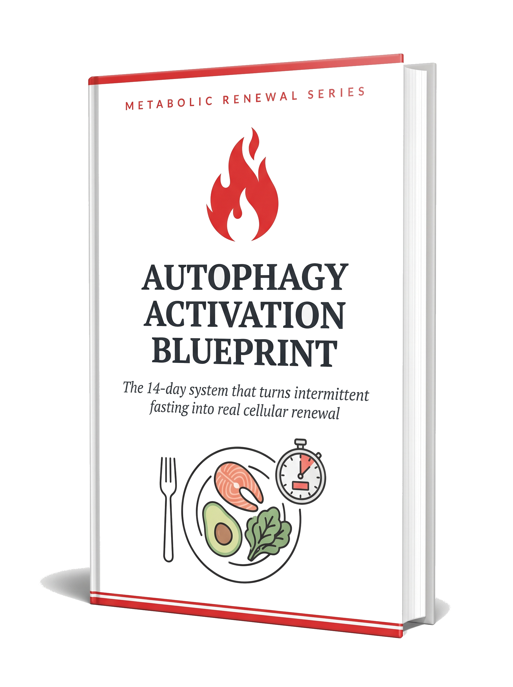

Straight talk: I'm not here to promise a miracle. I'm here to hand you the exact, evidence-based steps to switch on autophagy the right way, in 14 days, at a pace that's safe for a 55+ body. The rest is just opening the guide and following the plan.
It's called autophagy, your body's natural cellular renewal process. Most people fast hoping to trigger it, and never actually do. The Autophagy Activation Blueprint is a simple, evidence-based 14-day system that shows you exactly how to switch it on, and how to protect the muscle that matters most after 55. And it works whether you are in your late fifties or well past 70.

Here is what almost no video tells you. Autophagy does not switch on the moment your stomach is empty. It is controlled by a few signals inside your body, and small things you do during your fast (a splash of cream, a sugar-free gum, a stressful morning) can quietly keep it switched off.
After 55, this matters even more. Research shows that autophagy naturally slows with age, so the people who need it most are often the ones whose bodies have become slow to trigger it. The answer is not to fast longer, which tends to cost you muscle. It is to work with the three signals that actually control it, at the right time of day. And it is never too late. Whether you are 55, 65, or well past 70, your body still responds to these signals, and the research is clear that it can.
That is all this Blueprint is: the science of fasting and cellular renewal, grounded in published research and translated into simple, day-by-day steps you can follow without a medical degree.
Quiet it, and cellular clean-up can finally begin. You will learn how, without going hungry all day.
A short, gentle movement can trigger it, and often does more than an extra hour of fasting.
The small, sneaky things that keep it high, and the clean fast that finally brings it down.
You don't need more theory. You need to know exactly what to do, and when. Here is what you get.
Wake up, open the day, follow the steps. Each day tells you your fasting window, your movement, and your one key action, and it ramps up gently so it fits a 55+ body.
A simple bedtime sequence that supports your deepest renewal while you sleep, plus the morning steps that keep it going instead of undoing it before 8 a.m.
Exactly what to eat to target visceral fat while protecting your muscle, with the protein targets and simple rules that make muscle loss a non-issue, even in your 70s.
A clear list of the foods and drinks that support autophagy, and the "harmless" ones (yes, that splash of cream) that quietly switch it off during your fast.
And yes, it works even if you are well past 70. Your body still responds.
Everything you need to finally do this right, in one simple guide, for a one-time $19.99.
Read it, start it, and if you don't feel it was worth every penny within 7 days, just email me and I'll refund you in full. No fine print, no hard feelings. The risk stays on me, where it belongs.
Start tonight
You've already done the hard part: the discipline, the hunger, the patience. Give it 14 days, and finally get the result you have been fasting for.
Yes, I want the Blueprint for $19.99
I read the comments under my videos every single day.
And the same three worries come up again and again, from people over 55 who are doing everything they were told to do.
You are not doing anything wrong. There is just one thing almost no one explains: fasting and activating autophagy are not the same thing. You can do the hours perfectly and still leave that renewal process switched off, which is exactly why the belly won't move. Closing that gap is the entire reason I put the Blueprint together.